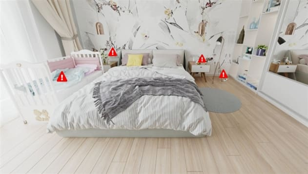
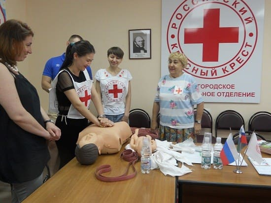
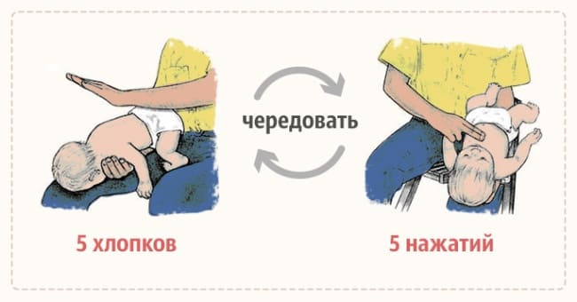
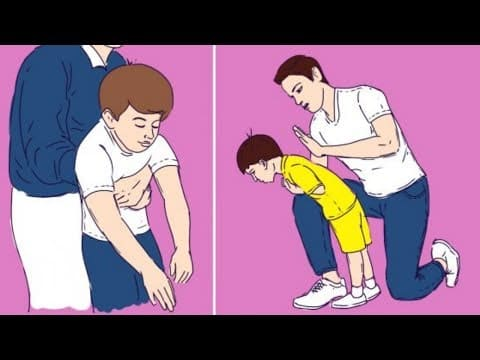

Сьюзен, рано поседевшая мать полуторагодовалого ребенка, с которым все время что-нибудь случается, однажды спросила: «Где я могу найти врача с постоянным проживанием? Доживу ли я до того времени, когда ребенок немного повзрослеет?» Когда происходит несчастный случай, а он может произойти даже в самом безопасном доме и с самыми умненькими детьми, вы, мама и папа, являетесь для ребенка первой службой спасения. Вот курс по спасению жизни ребенка.
Если вы подготовите свой дом, свои навыки и свою психику на случай экстренной ситуации – а она, скорее всего, возникнет, – при спасении ребенка вы окажетесь на шаг впереди.
Предотвратите. Сделайте свой дом безопасным, насколько это возможно, следуя рекомендациям, как сделать дом менее травматичным для ребенка.

Подготовьтесь. Пройдите курс кардиопульмональной реанимации грудных детей и курс оказания первой помощи при несчастных случаях, и каждые два года проходите курс повторно. Они организуются вашим местным отделением Красного Креста или больницей. Если таких курсов нет, соберите группу родителей и наймите дипломированного инструктора из вашей местной службы скорой помощи. Точно так же, как в школе будущих родителей вас готовят к рождению вашего ребенка, на курсах кардиопульмональной реанимации вас подготовят к жизни вашего ребенка. Дети в старших классах и колледжах также должны пройти курс КПР, особенно если они часто сидят с младшими братьями и сестрами. В крайнем случае хотя бы посмотрите всей семьей видео по реанимационным мероприятиям. Обсуждайте то, что вы узнали на курсах или при просмотре видео, и практикуйтесь. Требуйте, чтобы няня, которая сидит с вашим ребенком, прошла курс кардиопульмональной реанимации, а если ваш ребенок ходит в садик, проверьте, прошли ли воспитатели этот курс.

Практикуйтесь. Время от времени прокручивайте в уме, что бы вы стали делать, если бы… Или практикуйтесь реально. Повторяйте то, что вам показали на курсах. Практикуйтесь на куклах или подушках, а не на детях. Разработайте план действий и храните эту стратегию в своей памяти, как учебную карточку, которая моментально выскакивает, как по рефлексу, в ситуациях, когда действовать нужно быстро.
В этой главе мы опишем техники, которые вам нужно знать, чтобы умело и быстро спасать жизнь в многочисленных критических ситуациях.
Если ребенок давится, это означает, что он пытается устранить из частично перекрытых дыхательных путей инородное тело; если он задыхается, это значит, что он отчаянно пытается втянуть воздух, поскольку дыхательные пути перекрыты. Это одна из самых частых причин детской смерти.

Если ребенок может кашлять, плакать или говорить и явно дышит, дыхательные пути перекрыты не полностью. Чтобы производить звуки, требуется движение воздуха. Обычно рвотного и кашлевого рефлекса ребенка достаточно для того, чтобы вывести инородное тело наружу. В этом случае ваше вмешательство излишне и потенциально опасно. Вместо этого просто будьте рядом, обеспечивая ребенку эмоциональную поддержку, и спокойно приговаривайте: «Все в порядке», – чтобы ребенок не паниковал. Помните, вы для ребенка – зеркало, которое показывает, когда впадать в панику. Если паникуете вы, паникует и ребенок. Если вы не можете отчетливо увидеть инородный предмет, не лезьте пальцем вслепую, чтобы найти его ощупью: тем самым вы можете затолкнуть предмет еще дальше в глотку.

Если ребенок проглотил посторонний предмет
Для ребенка действие рука-рот стандартно, но сколько же волнения оно приносит родителям! Дети постоянно что-то проглатывают, к примеру, монеты, которые почти всегда безболезненно проходят через желудочно-кишечный тракт и выходят наружу через несколько дней. Если ребенок не кашляет, у него не увеличилось слюноотделение, не болит живот и выглядит он вполне счастливым, совсем не обязательно делиться своим открытием с врачом.
Но бывают случаи, когда без волнения не обойтись. Иногда большие монеты застревают в пищеводе, трубке, соединяющей желудок и ротовую полость. Предмет, застрявший в пищеводе, куда менее опасен, чем предмет, застрявший в трахее, но даже он может мешать ребенку нормально глотать, а иногда и дышать. Нужно срочно вызывать врача, если вы заметили, что: у ребенка увеличилось слюноотделение, появилась боль в том месте, где застрял предмет (обычно только старшие дети могут указать на место, где у них болит), и ребенок не может глотать.
Если у ребенка имеются следующие признаки, его дыхательные пути перекрыты:
• ребенок хватает ртом воздух или синеет;
• теряет сознание (и вы подозреваете, что он поперхнулся);
• выражение его лица явно указывает на то, что он подавился: широко открытые глаза, открытый рот, течет слюна, испуганное выражение;
• ребенок постарше указывает на то, что он подавился, универсальным знаком: хватается за горло.
Если у вашего ребенка имеется любой из вышеперечисленных признаков, есть два подхода, к которым вы можете прибегнуть: прием Геймлиха (также известный как толчки в живот или поддиафрагмальные толчки) и удары по спине в сочетании с компрессией грудной клетки. Прием Геймлиха не рекомендуется для детей до года, поскольку потенциально может вызвать повреждение жизненноважных органов брюшной полости. Велись ожесточенные споры по вопросу, что лучше для детей от года до двух, метод ударов по спине и компрессии грудной клетки или прием Геймлиха, однако общее мнение сводится к тому, что для более старших детей и взрослых прием Геймлиха (поддиафрагмальные толчки) превосходит вторую технику. Родители обычно чувствуют себя более уверенно, и потому допускают меньше ошибок, выполняя удары по спине; но в последнее время рекомендуется прием Геймлиха в младенческом варианте для детей от года.
ОСОБОЕ ПРИМЕЧАНИЕ. Какой бы метод вы ни выбрали, действуйте как можно энергичнее. Не сдавайтесь. Инородное тело может раствориться или стать меньше, или дыхательные пути могут расслабиться, и посторонний предмет выйдет легче. Если ваш ребенок начал давиться в общественном месте, громко зовите на помощь, особенно если вы не знакомы с массажем сердца и искусственным дыханием. Рядом может оказаться ангел-хранитель в лице выходного пожарного или парамедика (или кто-то еще, кто знает, как делается массаж сердца и искусственная вентиляция легких), который поможет вам, пока медицинские работники в пути. Действуйте быстро, но все ваши действия должны быть обдуманными.
Пункт первый: пять ударов по спине. Положите ребенка с широко расставленными ногами себе на руку (на предплечье) так, чтобы голова оказалась чуть ниже туловища. Поддерживайте подбородок ребенка ладонью руки, на которой он лежит. Нанесите пять быстрых, сильных ударов между лопаток ребенка основанием ладони. Одновременно зовите на помощь: «Мой ребенок подавился – вызывайте службу спасения!» Если вы одни, выполните пункты с первого по четвертый, и только затем бегите с ребенком к телефону. Будет лучше, если вы попытаетесь помочь ребенку сами в течение двух минут перед тем, как позвонить в скорую. Время от времени зовите на помощь. Возможно, кто-нибудь вас услышит и вызовет скорую помощь.
Пункт второй: компрессия грудной клетки. Если посторонний предмет не вылетел из дыхательных путей ребенка (о выходе его свидетельствует кашель или крик, или вы можете увидеть, как изо рта ребенка что-то выпало) и он все еще не дышит, переверните его и положите к себе на колено. Сделайте четыре быстрых, сильных толчка в грудь, нажимая на грудину ребенка. Чтобы найти точное место, куда следует нажимать, мысленно проведите линию между сосками. Нужное вам место находится на ширину одного пальца ниже той точки, в которой эта линия пересекает грудину. Быстро надавливайте на грудину двумя или тремя пальцами, опуская ее на глубину 4 см и давая грудине вернуться в нормальное положение между толчками, не отнимая своих пальцев. Продолжайте чередовать удары по спине и компрессию грудной клетки до тех пор, пока не выйдет предмет или ребенок не потеряет сознание. Если ребенок потерял сознание, не пытайтесь продолжать удары по спине. Сейчас вы должны делать непрямой массаж сердца, являющийся частью СЛР, чтобы вывести предмет из дыхательных путей. Начинайте непрямой массаж сердца, как описано в главе «Если ребенок не дышит».
Пункт третий: загляните ребенку в рот в поисках предмета. После того как провели непрямой массаж сердца у ребенка, находящегося без сознания в течение 30 секунд, откройте ему рот и посмотрите, не виден ли предмет, которым ребенок подавился. Если вы его увидели, удалите его. Не тыкайте пальцем наугад, вы можете протолкнуть предмет дальше.
Удары по спине
Пункт четвертый: дыхание рот в рот. Если ребенок все еще не дышит, сделайте два выдоха рот в рот или рот в рот и нос. Если при каждом вашем вдувании грудь ребенка приподнимается, вы можете быть уверены, что в дыхательных путях чисто. Продолжайте искусственную вентиляцию легких, пока ребенок не начнет дышать самостоятельно.
Пункт пятый: повторите сначала. Повторите непрямой массаж сердца в течение 30 секунд, затем сделайте два вдоха (по рекомендациям СЛР) и повторяйте свои действия, пока не подоспеет профессиональная помощь или ребенок не начнет дышать. Если грудная клетка ребенка не движется во время искусственного дыхания, сильнее прижмите свой рот ко рту или носу ребенка и снова сделайте два выдоха. Если грудная клетка все же не двигается, снова сделайте непрямой массаж сердца в течение 30 секунд и проверьте, не вышел ли предмет (пункт третий). Продолжайте чередовать массаж сердца, искусственное дыхание и осмотр ротовой полости, пока не прибудет помощь. Если вы провели реанимацию в течение двух минут и помощи ждать неоткуда, лучше пока оставить ребенка и позвонить в «Скорую» или поискать помощь.
Имея практику, всю последовательность этих действий можно выполнять менее чем за минуту. Попрактикуйтесь на кукле, и вы заметите, как ловко вы будете чередовать удары по спине с компрессией грудной клетки, удерживая ребенка зажатым между двумя своими ладонями и перекидывая его из одного положения в другое.
Прием Геймлиха не рекомендован для детей до года.
Если ребенок находится без сознания. Положите ребенка на спину и приступайте к СЛР (принципы сердечно-легочной реанимации описаны в разделе «Если ребенок не дышит»). Не пытайтесь прибегнуть к приему Геймлиха. Действия, выполняемые с целью СЛР – непрямой массаж сердца и искусственное дыхание, – могут способствовать выходу инородного тела.
Каждый раз переключаясь с массажа на искусственное дыхание, проверяйте, не появилось ли во рту инородное тело (помните, что искать предмет пальцем на ощупь опасно).
Если ребенок в сознании. Встаньте позади задыхающегося ребенка и обнимите его руками за талию. Сожмите одну кисть в кулак и приложите кулак большим пальцем к животу ребенка посередине, чуть выше пупка, но на безопасном расстоянии от конца грудины. Сожмите свой кулак второй ладонью и нажмите на живот ребенка резким движением вглубь и вверх, повторив толчок при необходимости 6–10 раз.
Кисти ваших рук не должны касаться конца грудины или ребер.
Продолжайте выполнять движения до тех пор, пока не выйдет предмет и ребенок сможет нормально дышать или пока ребенок не потеряет сознание.
Главы по сердечно-легочной реанимации и непроходимости дыхательных путей призваны дать родителям и всем, кто осуществляет уход за детьми, обзор действий, направленных на спасение жизни в экстренных ситуациях. Однако мы не собираемся давать вам все знания, необходимые для получения диплома профессионального спасателя, мы также не ставим своей целью полностью подготовить вас к любой экстренной ситуации. Информация, данная в этих главах, самая современная на момент выхода этой книги.
Официальные рекомендации по проведению СЛР время от времени обновляются. Одно из последних изменений – это то, что порядок проведения реанимационных действий – обеспечение проходимости дыхательных путей, дыхания и кровообращения – изменился.
Непрямой массаж сердца в настоящее время считается самым важным первым шагом.
Таким образом, новый порядок реанимационных действий – непрямой массаж сердца, обеспечение проходимости дыхательных путей и дыхания.
Пункт первый: попробуйте разбудить ребенка, постучав по его голой ступне, потрепав по плечу или груди и громко позвав по имени. Никогда не трясите ребенка.
Пункт второй: позовите на помощь и попросите вызвать скорую. Если рядом кто-то есть, пусть он незамедлительно вызовет скорую помощь. Если никого нет, лучше сразу начать реанимационные действия, чем отложить их и вызвать для начала скорую. По прошествии двух минут ваших реанимационных действий, если помощь не подоспела, лучше вызвать скорую.
Пункт третий: непрямой массаж сердца. Первые 30 нажатий на грудную клетку проводите с периодичностью 100 в минуту (это должно занять у вас 15–20 секунд). Техника нажатий и их сила зависят от возраста ребенка.
Дети до года: мысленно проведите линию поперек грудной клетки ребенка от соска до соска. Это грудина (грудинная кость). Нажимайте достаточно сильно, чтобы продавить грудину примерно на 4 см. Если присутствуют два человека, владеющие навыками СЛР, можно применить технику, когда нажатие происходит большими пальцами, а ладонь обхватывает грудную клетку.
Дети от одного года и старше: одной или двумя руками, основаниями ладоней надавливайте на грудину так, чтобы она продавливалась на 5 см.
Пункт четвертый: восстановление дыхания. После того как вы произвели 30 нажатий на грудину, откройте ребенку рот, чтобы удостовериться, что он не подавился каким-либо предметом, особенно если вы заметили, что ребенок поперхнулся, прежде чем потерять сознание. Если вы что-то увидели, достаньте предмет. Не пытайтесь нащупать предмет пальцем, вы рискуете протолкнуть его внутрь. Затем выдохните в рот ребенку дважды, каждый выдох по одной секунде. Техника искусственного дыхания зависит от возраста ребенка:
Дети до года: накройте нос и рот ребенка своим ртом и сделайте выдох.
Дети от года и старше: заткните ребенку нос и выдохните только в рот. Грудная клетка должна подниматься и опускаться с каждым вздохом. Если грудная клетка не поднимается, измените положение головы ребенка, плотнее прижмите свой рот и попытайтесь снова.
Пункт пятый: продолжайте две минуты. В течение двух минут выполняйте непрямой массаж сердца (15–20 секунд или меньше, если происходит два сжатия в секунду) попеременно с искусственным дыханием. Если вы один, то настало время прекратить реанимационные действия и вызвать скорую помощь, или найти человека, который сделает это. Если вы не в одиночестве и скорая вот-вот подъедет, продолжайте реанимационные действия до приезда профессионалов или до того момента, пока не увидите, что ребенок дышит.
Если реанимационные действия выполняются двумя людьми, то один проводит непрямой массаж сердца, а второй делает искусственное дыхание: 15 нажатий на грудину, два выдоха (30 нажатий и два вдоха, если реанимацию проводит один человек). Если доступен автоматический дефибриллятор, время включить его.
Изменения, вносимые в непрямой массаж сердца с возрастом
Новорожденные: нажимайте на грудину двумя пальцами, если вы одни. Если СЛР выполняется вдвоем, то нажимайте большими пальцами, а остальными обхватывайте грудную клетку ребенка. Вдавливайте грудину примерно на 4 см с интервалом 100 нажатий в минуту.
Ребенок более старшего возраста (от года): упирайтесь основаниями своих ладоней и надавливайте глубже, на 5 см, с интервалом 100 толчков в минуту.
Закрытый массаж сердца новорожденного
Марта, Уильям, Роберт, Джеймс Сирс"Ваш малыш от рождения до двух лет"